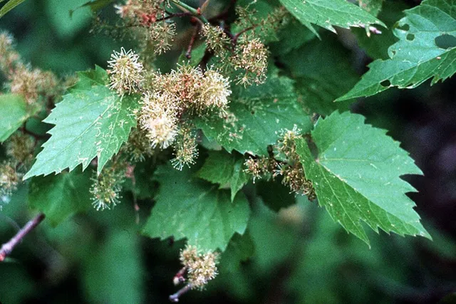

Wild grape
Wild grape is a wild fruit you can forage from August to October in Ontario and Quebec. Climbing vine with tendrils, shaggy bark and toothed lobed leaves; small sour purple grapes with pear-shaped seeds.

When is wild grape in season in Canada?
Wild grape is usually in season August to October. Timing shifts with weather, latitude and altitude.
Where does wild grape grow in Canada?
Wild grape grows in Ontario, Quebec. Regions: Ontario, Quebec.
How do you recognise wild grape?
Climbing vine with tendrils, shaggy bark and toothed lobed leaves; small sour purple grapes with pear-shaped seeds.
How do you harvest wild grape?
Pick only fully ripe fruit that comes away easily, into a shallow container so it doesn't crush. Leave plenty on the plant for birds and wildlife.
How do you eat wild grape?
Jelly, juice; young leaves stuffed.
How do you store wild grape?
Juice or jelly.
What can be confused with wild grape?
Moonseed (Menispermum canadense), rated deadly. Grape has forked tendrils; moonseed has none. Grape berries have 2–4 teardrop seeds; moonseed has a single crescent-moon seed. Moonseed leaves join the stalk slightly inside the edge.
What is wild grape good for?
Vitamin C.